Features
Port forwarding, the file explorer, remote edit, X11, search, selection, and more.
Port Forwarding
naTE manages SSH port forwards visually, per session. No need to pass -L / -R flags on the command line.
Opening the port-forward panel
Click the PFW button in the tile title bar (visible on SSH sessions). A panel slides open below the title bar showing all active forwards for this session.
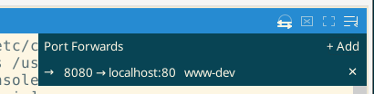
Adding a forward
- Click Add in the port-forward panel.
- Choose Local or Remote mode.
- Fill in the fields and click Verify & Add.
Local forwarding (−L)
Binds a port on your local machine and tunnels connections through the SSH host to a remote endpoint.
| Field | Description |
|---|---|
| Local port | Port to listen on locally (e.g. 8080) |
| Remote host | Host to forward to, as seen from the SSH server (e.g. db.internal) |
| Remote port | Port on the remote host (e.g. 5432) |
Example: Local 5432 → remote db.internal:5432 lets you connect your local PostgreSQL client directly to a remote database via the SSH tunnel.
Remote forwarding (−R)
Exposes a port on the remote SSH server and tunnels connections back to a local host/port.
| Field | Description |
|---|---|
| Remote port | Port to bind on the SSH server |
| Local host | Local address to forward to (usually localhost) |
| Local port | Local port (e.g. your dev server at 3000) |
Example: Remote 8080 → local localhost:3000 exposes your local dev server to the remote machine — useful for showing work to a colleague who has SSH access to the server.
Verify & Add
naTE verifies the forward configuration before adding it and shows a confirmation before closing the add dialog. If the binding fails (port already in use, firewall block), the error is shown inline.
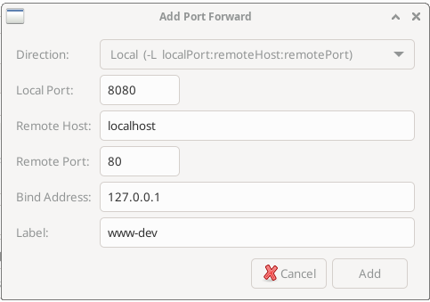
Forward health detection
A local (−L) forward only opens a listening socket on your machine, so binding it always appears to succeed — the SSH server is not consulted until something actually connects through the tunnel. That means a forward the server forbids can look healthy right up until the moment you try to use it.
naTE closes that gap by probing each local forward the instant it is created, surfacing problems immediately instead of on first use. Each forward shows one of three states in the panel and in the tile title-bar indicator:
| State | Meaning |
|---|---|
| Active (normal) | The tunnel is up and the target is reachable. |
| Error (red) | The server refused the forward — typically AllowTcpForwarding no, shown as "administratively prohibited". The listener is retired because it can never carry traffic. |
| Warning (amber) | Forwarding is permitted, but the target host/port was not reachable at probe time (e.g. the service has not started yet). This clears automatically the first time a connection succeeds. |
How it works: naTE opens a single throwaway channel to the target as soon as the forward is set up and reads the server's response. The SSH reason code distinguishes a policy refusal (a hard error) from a target that is merely down (a transient warning), so you get the same diagnostics a command-line ssh −L prints to stderr — but tied to the visual forward state rather than buried in the log.
Saving forwards to a profile
Port forwards can be saved to a connection profile so they are set up automatically every time you connect. Add them in the Port Forwards box on the New Connection dialog's SSH tab before saving the profile — see Port Forwards for the fields and what they mean.
File Explorer & Transfer
The File Explorer browses remote filesystems over the SSH connection a session already has — no sshfs, no second login, and no interruption to the shell running in the tile. It opens in its own window, titled naFX after the endpoints it is pointed at, and works in one of two modes. The same window switches between them, so nothing is lost when you change your mind.
| Mode | Opens with | For |
|---|---|---|
| Explore | Terminal → File Explorer... | One pane filling the window — navigating and one-off administration |
| Transfer | Terminal → Transfer Files... | Two panes and a queue — moving files between any two endpoints |
Both entries are also on the right-click menu of a tile and of a tab. Each session gets one explorer window: asking again brings the existing window forward and switches it to the mode you asked for.
Explore mode
A single pane, for looking around and making small changes without leaving naTE.
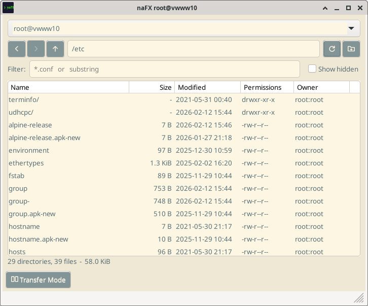
- Sort by any column — Name, Size, Modified, Permissions, Owner — by clicking its header; click again to reverse.
- Filter by glob (
*.conf) or by plain substring. The status line reports how many entries the filter hid, so a short list is never mistaken for an empty directory. - Show hidden toggles dotfiles.
- Navigate with the back, forward and up buttons, or by typing a path directly into the path field.
Acting on files
Right-click a selection for the context menu:
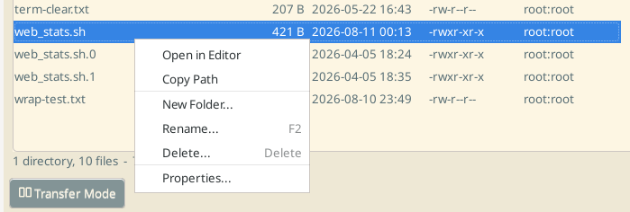
| Item | Does |
|---|---|
| Open in Editor | Downloads the file and opens it in your local editor, watching for saves — the same mechanism as Remote File Editing. Disabled for directories. |
| Copy Path | Puts the absolute remote path on the clipboard |
| New Folder... | Creates a directory in the current location |
Rename... (F2) | Renames in place. Renaming is inherently single-target, so the item is disabled — rather than silently acting on one of several rows — when more than one entry is selected. |
Delete... (Del) | Deletes the selection, recursively for directories, after confirmation. With several entries selected the item names the count, so you can see what you are about to remove. |
| Properties... | Shows size, type, timestamps and ownership, and lets you change the permission bits |
Permissions
Properties... reports what the entry is and who owns it, and gives you its mode two ways at once.
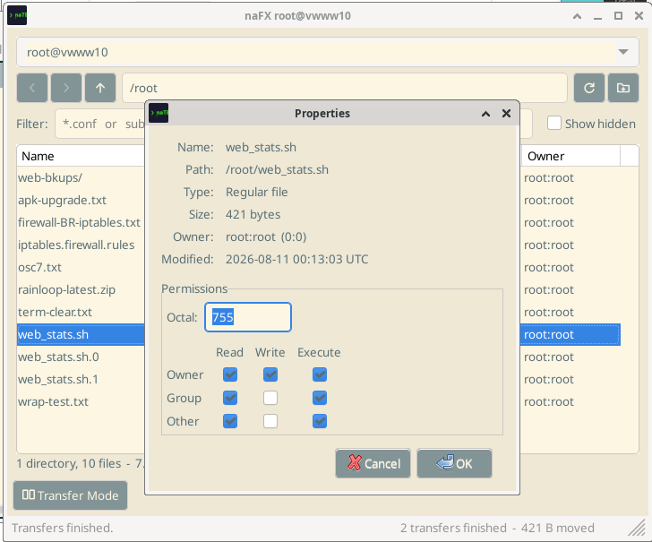
Type an octal value such as 755 and the Read / Write / Execute grid follows it; tick the boxes instead and the octal field updates to match. Nothing is sent to the remote host until you click OK.
Transfer mode
Two panes side by side with a transfer queue below. Point either pane at This computer or at any active SSH session using its dropdown — uploads, downloads, server-to-server copies and copies between two local folders are all the same operation.
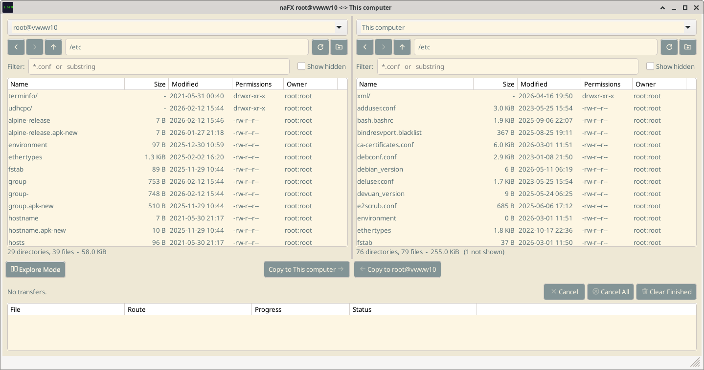
- Choose an endpoint for each pane from its dropdown at the top.
- Navigate each pane to the source and destination directories.
- Select the files or directories to move in the pane they live in.
- Click the Copy to ... button naming where they should land.
The copy buttons name their destination rather than a direction, and the pair sits over the splitter so each button is above the pane it copies out of — there is no direction to work out. The queue below shows every job with its route, live progress and status.
- Cancel stops the selected transfer; Cancel All stops everything queued; Clear Finished tidies away what has completed.
- Directories transfer recursively.
- Symbolic links are handled the way you choose, from the dropdown beside the mode button. Keep links reproduces each link on the far side pointing where it already points; Skip links leaves them out of the copy, listing them in the queue as skipped so nothing goes missing quietly. A recursive copy never descends through a link either way, so a link pointing at a parent directory cannot turn a copy into an endless one. A kept link whose target does not exist on the destination will be a dangling link — that is what was asked for, and naTE will not second-guess it. The starting choice for new windows is Edit → Preferences → Behavior → Symbolic links in copies.
- Permissions are reproduced on the copy: a script that was executable where it came from is executable where it lands. As with
cp, this applies where the copy creates the file — overwriting an existing one leaves that file's permissions alone — and the destination's own umask still applies. setuid, setgid and sticky bits are deliberately not carried across. - Drag and drop — files dragged from your desktop file manager onto a pane are queued for copying into that pane's current directory.
- Copies that go nowhere are refused by name rather than half-attempted: a file onto itself, or a directory into its own subtree.
- Transfers keep running when you switch back to Explore mode; progress stays visible in the status bar.
When the destination file already exists
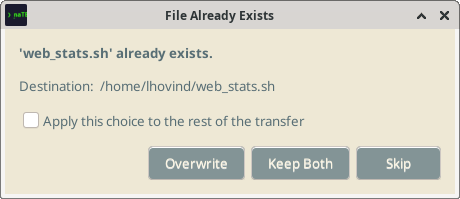
- Overwrite replaces the existing file.
- Keep Both transfers the incoming file under a free name, leaving the existing one untouched.
- Skip leaves the existing file and moves on.
- Apply this choice to the rest of the transfer answers every remaining conflict in the queue the same way, so a large directory copy does not have to be babysat.
The safe answer is the default. Skip is the default button, so pressing Enter or Esc without reading the dialog cannot destroy anything. The same reasoning applies with no one there to ask: a queue that cannot prompt skips rather than overwrites, so an unattended transfer never silently replaces data.
How it works: Transfers run over a new SFTP channel multiplexed on the existing authenticated SSH connection — no re-authentication, and no interruption to your running terminal session. Remote-to-remote transfers stage through a temporary local file automatically, so two servers that cannot reach each other can still exchange files through you.
Keyboard
| Shortcut | Action |
|---|---|
| Alt+← / Alt+→ | Back / forward through visited directories |
| Backspace | Up one directory |
| Ctrl+L | Focus the path field |
| Ctrl+F | Focus the filter field |
| Ctrl+H | Toggle hidden files |
| F2 | Rename the selected entry |
| F5 | Refresh the listing |
| Delete | Delete the selection |
Window size: the explorer is sized in whole panes — the window remembered as FileExplorerWidth is the width of one pane, and Transfer mode doubles it so neither pane is squeezed by switching modes. See Configuration.
Remote File Editing
Edit a remote file in your local editor. naTE downloads it, watches for saves, and uploads changes back automatically.
Starting a remote edit
- Focus an SSH session.
- Open Terminal → Edit Remote File....
- The remote file browser opens. Navigate to the file and click Edit.
- naTE downloads the file to a temporary location and opens it in your editor.
- Edit and save normally. naTE detects the save and uploads the new version.
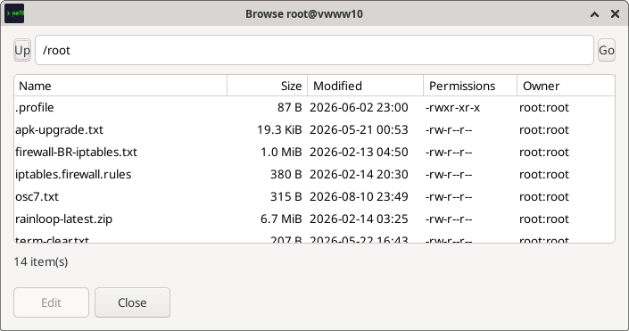
To edit a file you are already looking at in the File Explorer, use Open in Editor from its context menu instead — it skips the browser and starts the same watch-and-upload cycle.
Configuring your editor
naTE uses the Remote editor command setting (Edit → Preferences → Behavior). If unset, it falls back to your $EDITOR environment variable. The same setting drives the File Explorer's Open in Editor.
- Many GUI editors are single-instance — launching them a second time hands the file to an already-running window and exits immediately, which causes naTE to think the edit is done before you have saved anything. You need a flag that either blocks until the file is closed, or forces a new window. For example:
code --wait(VS Code),mousepad -o window(Mousepad),gedit --new-window --wait(gedit). Check your editor's--helpoutput for the equivalent option.
Auto-upload on save: naTE uses inotify to watch the temp file. Save the file in your editor and the upload happens within a second, without any extra step. This works with editors that do atomic-rename saves (VS Code, gedit).
X11 Forwarding
Run graphical Linux applications on a remote server with their windows appearing on your local desktop.
Enabling X11 forwarding
- In the New Connection dialog (SSH tab), check Enable X11 forwarding.
- Connect. naTE generates an Xauthority cookie and forwards the X11 channel automatically.
- The X11 indicator in the tile title bar lights up when X11 is active.
You do not need to configure DISPLAY manually — naTE sets it for the session.
Requirement: Your local machine must have an X11 display server running (standard on most Linux desktops). The remote server must have X11Forwarding yes in its /etc/ssh/sshd_config.
SSH Agent Forwarding
Agent forwarding lets you SSH from the remote server to a third host using your local SSH key — without copying your private key to the remote.
Enabling
Check Forward SSH agent in the SSH connection options. This is equivalent to ssh -A.
Security note: Agent forwarding should only be used with servers you trust. A malicious or compromised server with root access could use your forwarded agent socket to authenticate as you to other servers while your session is open.
Find in Terminal
Search the full scrollback buffer without leaving the terminal.
Opening search
- Press Shift+Ctrl+F
- Or use Edit → Find in Terminal
A search bar appears at the top of the terminal. If you have text selected, it pre-populates the search field.
Navigating results
- Enter or F3 — jump to the next match
- Shift+F3 — jump to the previous match
- Escape — close the search bar
All matches are highlighted simultaneously. The current match is distinguished with a different color.
Text Selection & Copy
Mouse selection
- Click and drag — select a character range
- Double-click — select the word under the cursor. The word boundary is defined by a configurable regex (Edit → Preferences → Behavior → Word select regex). The default pattern selects any run of non-whitespace characters.
- Triple-click — select the entire line
Copy-on-select
When enabled (default), selected text is automatically copied to the X11 primary selection so you can middle-click to paste it anywhere. Toggle in Edit → Preferences → Behavior.
Copy and paste
- Shift+Ctrl+C on a selection — copies to clipboard (does not send the interrupt signal if text is selected)
- Shift+Ctrl+V — paste from clipboard
- Edit → Paste from Selection — paste from X11 primary selection
- Middle-click — paste from X11 primary selection (if copy-on-select is enabled)
Selection context menu
Right-click on a selection to get a context menu with actions on the selected text:
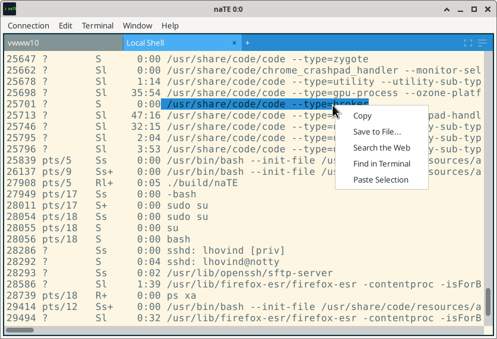
| Item | Description |
|---|---|
| Copy | Copy the selection to the clipboard |
| Save to File… | Write the selected text to a file on disk |
| Search the Web | Open the configured web search URL with the selection as the query (same as Edit → Web Search) |
| Find in Terminal | Open the search bar pre-populated with the selected text |
| Paste Selection | Paste the X11 primary selection at the cursor (equivalent to middle-click) |
Bracketed Paste
Some terminal applications (vim, shell readline) request bracketed paste mode, where pasted text is wrapped in escape sequences so the app can distinguish paste from typed input. naTE supports this automatically.
When you paste multi-line content into a plain shell prompt (one that does not support bracketed paste), naTE shows a Multi-line Paste confirmation dialog so you can review the full text before it is sent — a safeguard against accidentally running unexpected commands.
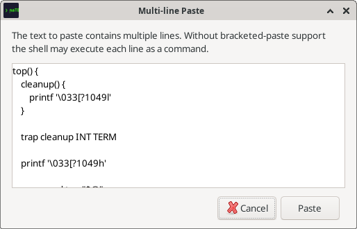
Terminal Reset
If a TUI application crashes and leaves the terminal in a garbled state:
- Terminal → Reset Terminal — resets all ANSI modes and attributes without clearing content. Use this when colors are stuck or the cursor is in the wrong mode.
- Terminal → Reset and Clear — resets modes and clears the entire scrollback. naTE will offer to save the scrollback to a file first.
Alternate Screen
Full-screen TUI applications (vim, htop, tmux, man) use the alternate screen buffer — a separate buffer that is restored when the app exits, leaving your scrollback intact. naTE handles this automatically via VT100 escape sequences.
The AltScr button in the tile title bar lets you manually toggle between the main and alternate screen. This is useful when an application crashes mid-session and leaves you stuck on the alternate buffer — press AltScr to get back to your shell.
Web Search
Select any text in the terminal and use Edit → Web Search to open a browser search for that text. The search URL template is configurable in Edit → Preferences → Behavior (default: DuckDuckGo). Replace {query} with a URL-encoded version of the selected text in the template.
URL Detection
naTE automatically detects URLs in terminal output and underlines them. Right-click a URL to take an action:
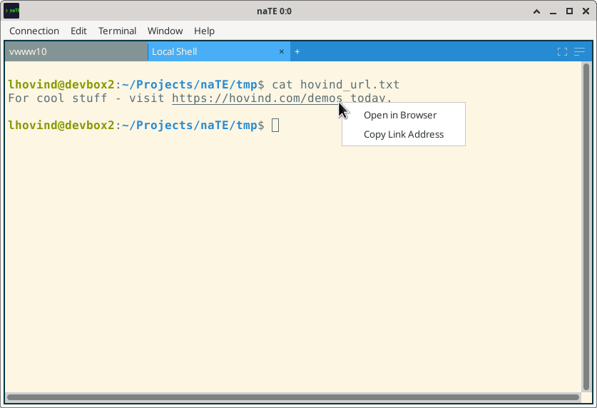
- Open in Browser — opens the URL in your system default browser
- Copy Link Address — copies the URL to the clipboard without opening it
Scrollback & Saving
naTE keeps a configurable scrollback buffer (default: 100,000 lines). Scroll up with the mouse wheel or the scrollbar to review earlier output.
To save the current scrollback to a file: Terminal → Save Session to File. You can choose the destination file in the save dialog.